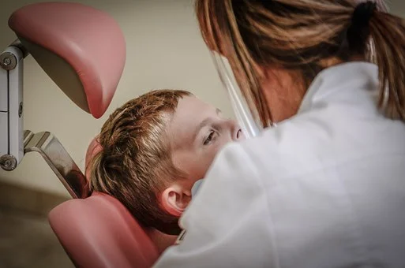

Dentistry-a term utilized for the treatment of the oral cavity. Toothache, gum hurt, awful breath is the overall issues one goes over from time to time. For this large number of issues, dentistry is practiced by a group containing a dental specialist, dental assistant, hygienist, dental professionals. Dentistry courses in Germany are concerned about general oral health and guarding it satisfied.
The impacts of drinking, smoking, tobacco biting, and so on are directly noticeable on an individual’s oral health and to fix it dentistry continues to advance new techniques and approaches which you will go over if you want to study dentistry in Germany. An individual’s oral health is of essential importance as all that we eat goes through our mouths. Oral health can be very fragile, a very normal example of this can be taken from, a small child age begins eating junk food and loses his teeth however junk food isn’t hit as much bad to adults as it hits children. Dentistry needed to invent significant methods to fix such harms. From fillings to tooth removal to root channel, dentistry has tracked down many such structures to safeguard individuals’ oral regions, and dentistry courses in Germany fuse this multitude of aspects.
To do such things one should be an expert and those finishing dental masters in Germany are at the very less than. For a dentist to turn into a dental specialist is difficult, one needs legal grades and degrees to arrive and have that position to carry out their treatments and finally resolve an individual’s oral issue. That is not all; numerous who study dentistry in Germany can also have some expertise in different units of oral health. Even that depends assuming the dentist is working with a Hospital or maintaining his own business, a dentist can pick either once he gets the permit after being qualified.